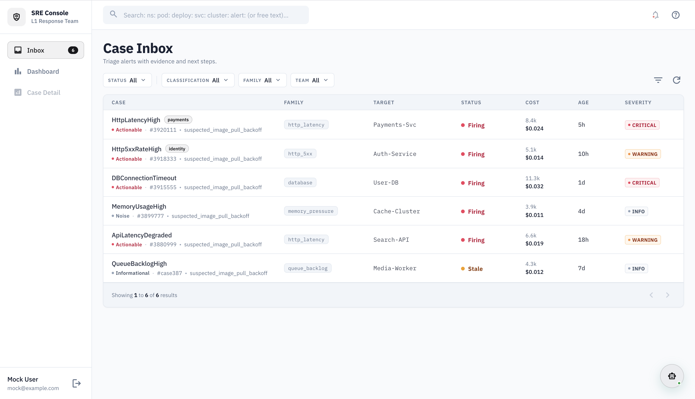

Tarka converts Prometheus/Alertmanager alerts into structured triage reports — evidence, confidence-ranked hypotheses, and copy-paste-ready commands. No guessing. Just signal.

Every on-call rotation has a few people who carry the tribal knowledge. They know which PromQL to run, which namespace to check, and which logs actually matter. Everyone else waits.
The result: slow MTTA, senior burnout, and incidents that drag on because the first responder isn't sure what "normal" looks like.
Tarka encodes the first 60 seconds of every investigation so every engineer on your team can respond with confidence — not just the one who's been there since day one.
The same 11-stage pipeline runs whether you invoke Tarka from CLI, a webhook, or the web UI.
Prometheus/Alertmanager alert arrives via CLI, webhook POST, or web UI. Labels extracted, target inferred automatically.
Best-effort reads from Prometheus, Kubernetes API, and logs. Missing sources noted explicitly, never faked.
Crash loops, OOM kills, image pull failures, CPU saturation, change correlation. Each produces confidence-scored hypotheses.
One-line verdict: label + why + next. Evidence-backed bullets, ranked hypotheses, 3–7 copy-paste commands.
Never mutates cluster state. Every operation is a read — Prometheus queries, kubectl get, log fetches. Safe to run during a live incident.
Deterministic base triage runs without any AI model. Add Vertex AI or Claude only when you want richer narrative enrichment.
When evidence is missing, Tarka says so explicitly. Scenarios A–D describe exactly what's blocked. No hallucinated root causes.
Every report ends with PromQL-first, kubectl-second commands you can run immediately. Designed for responders who need to act.
Stores every investigation in PostgreSQL. Surfaces similar past incidents during triage. Skills extracted from resolved cases inject relevant suggestions.
CLI for laptop investigations. Webhook mode for in-cluster automation. React console for team-wide visibility. One codebase, three surfaces.
Required: Prometheus/Alertmanager. Everything else is optional and degrades gracefully.
Core
Optional
When optional sources are unavailable, Tarka records the gap and continues. The report explicitly states what's missing.
Run on your laptop in 5 minutes. Point at any Prometheus-compatible endpoint. No infrastructure required.
Alertmanager fires → webhook → NATS JetStream queue → worker pool → reports in S3. Zero human intervention required during incidents.
React-based case browser. See all investigations, drill into reports, chat with the agent, and review historical patterns across your team.
→ See ScreenshotsNo vendor signup. No SaaS. Self-hosted, open source, Apache 2.0.